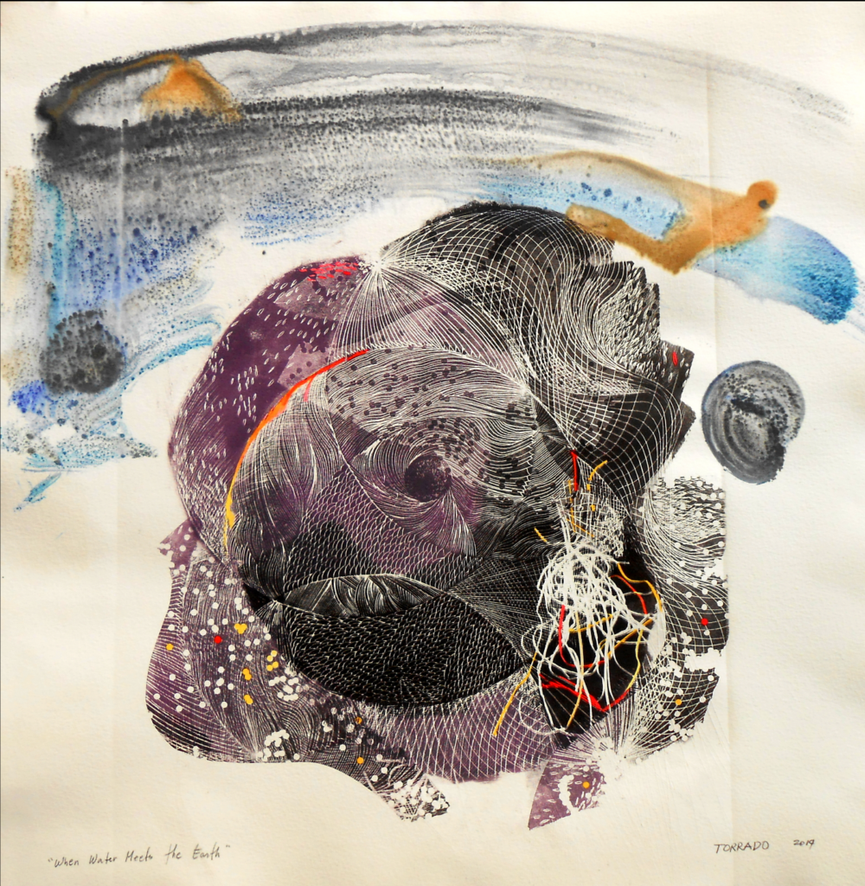
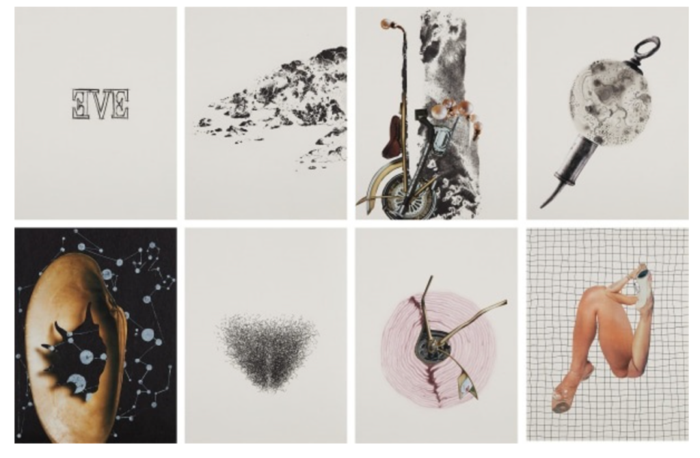
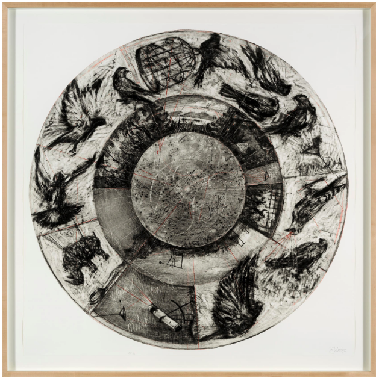

Monoprint Techniques and Digital Development
Workshop Structure
HOMEWORK
Create physical monoprints using oil pastels and objects for texture
IN-CLASS
In class you will learn to Digitize and develop your prints using Photoshop
Workshop Overview
From Handmade Monoprints to Digital Textures

Student Example of monoprint texture developed in Photoshop ( Vu Linh Nghi Nguyen - Linnie )
What You Will Learn:
- Make monoprints with oil pastels
- Create interesting textures with objects
- Turn your prints into digital assets
- Use Photoshop tools for better results
- Add these textures to your Term 2 project
Artist Inspiration Homework

Benjie Torrado Cabrera – When Water Meets Earth, 2014

Wangechi Mutu – Eve, 2006

William Kentridge Music Box Tondo, 2006
⚠️ Materials You Need for Homework
For Making Prints:
- Tracing paper
- Oil pastels
- White paper
- Pencils
- Objects that link to your projects that could be used as a stencil
Task 1: Making Your Monoprints Homework
Creating a Monoprint: 4 Simple Steps
1
Color the Tracing Paper
- Take tracing paper
- Cover one side with oil pastels
- Use bright colors
2
Add Objects for Texture
- Place string, leaves, or coins on plain paper
- Put your colored tracing paper on top (pastel side down)
3
Rub to Transfer
- Use a pencil to rub over the paper
- Press firmly to transfer the color
- Make sure to cover all areas
4
Reveal Your Print
- Carefully lift the tracing paper
- Remove the objects
- Your monoprint is on the plain paper
Monoprint Textures
Learn how to create and use monoprint textures in Photoshop
Homework Troubleshooting Homework
Monoprint Too Light
- Use more oil pastel
- Press harder when rubbing
- Try using a spoon instead of pencil
Paper Problems
- Use smooth white paper
- Make sure tracing paper is thin enough
- Tape paper down to prevent movement
Homework Requirement
Create at least 2-3 different monoprints before the next class. Experiment with different objects. Scan your physical prints at a high resolution to digitize in class.
Today's Class Activity
Digitize and develop your monoprints for your Term 2 project
1. Digitize (30 mins)
- Scan your monoprints
- Save files in appropriate format
- Create backup copies
2. Process (45 mins)
- Apply Threshold adjustment
- Remove white areas
- Create transparent backgrounds
3. Develop (45 mins)
- Add layer masks
- Try different blend modes
- Incorporate into your Term 2 project
⚠️
Remember: Save your work often! Keep original files for future editing.
Watch These Tutorials in Class In-Class
Working with Digital Masks
How to use masks to enhance your monoprint textures
Photoshop Terms You'll Use in Class:
- Threshold: Photoshop tool that makes images black and white only
- Layer Mask: Hides parts of an image without deleting them
- Blend Modes: Different ways layers interact with each other
- Magic Wand: Selection tool that selects similar colored areas
⚠️ Materials Needed for Class
For Digital Work:
- Your completed monoprints
- Access to scanner or camera
- Computer with Photoshop installed
- USB drive (optional for backup)
Task 2: Digitizing Your Prints In-Class
Scanning Tips
- Set scanner to 300dpi
- Scan as a color image
- Make sure the print is flat on the scanner
Tip: No scanner? Use a phone camera in good light.
Setting Up in Photoshop
- Open your scanned image
- Make sure image is at least 300dpi
- Save a copy to keep your original safe
Task 3: Digital Development In-Class
Photoshop Steps
1
Make High Contrast
- Go to Image → Adjustments → Threshold
- Move slider until you like the black and white result
- Click OK
2
Select White Areas
- Click Magic Wand Tool (W)
- Click on a white area
- Hold Shift to add more white areas
3
Remove White Areas
- With white areas selected, press Delete
- Only the black texture remains
4
Add a Layer Mask
- Click the "Add Layer Mask" button in Layers panel
- Use black brush to hide parts of the texture
- Use white brush to show parts again
5
Use in Your Project
- Copy your texture to your project file
- Try different blend modes (like Multiply or Overlay)
- Adjust opacity to make it subtle or strong
Tip: Try the Overlay blend mode for interesting effects.
Student Example In-Class

Click image to enlarge
This student made a monoprint with string and oil pastels, then enhanced it digitally
What They Did:
- Created monoprint with string
- Scanned at high resolution
- Used Threshold for contrast
- Added to their design project
Why It Works:
- The handmade texture looks unique
- Digital editing makes it clean
- The texture adds interest to the design
- It connects to their project theme
Digital Troubleshooting In-Class
Threshold Not Working Well
- Adjust contrast first
- Try different Threshold levels
- Or use Posterize instead (2-3 levels)
Layer Mask Problems
- Make sure you click on mask thumbnail
- Black hides, white shows
- Press Ctrl/Cmd+I to invert mask
What to Submit In-Class
Upload to Padlet
1. Original Monoprints
- Upload photos of your physical monoprints
- Include 2-3 different examples
- Add a short description of what you did
2. Digital Versions
- Upload your digitally enhanced monoprints
- Show how you'll use them in your Term 2 project
- Briefly explain your digital process
×